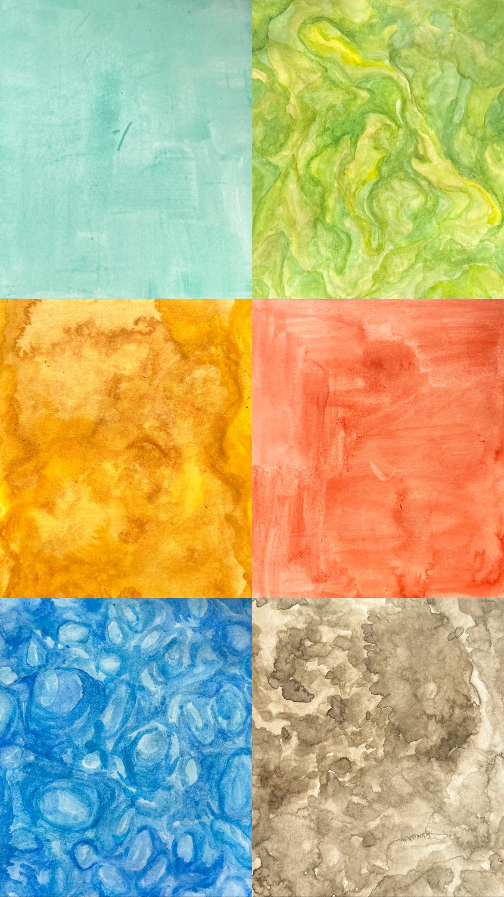
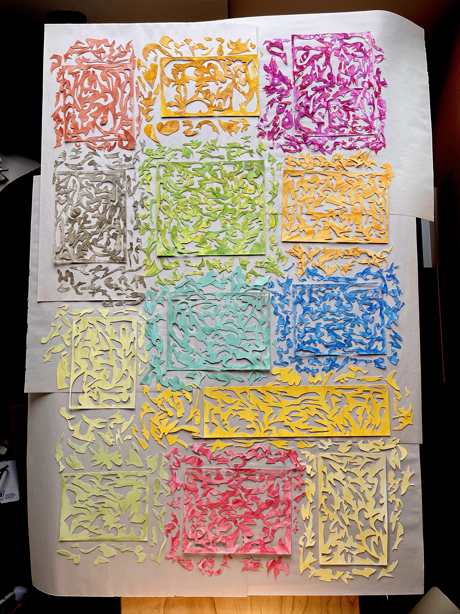

MADHAG
by Madi Haggard
An amalgamation of my additional professional and process work.
visit again soon... always adding more
Starla Wines
Below is additional brand identity work for Starla.
Seen In
Forbes, The Food Network, The Washington Post, The New York Times,
AD Week, Vanderpump Rules
Stockists
Specs, Sprouts, Walmart, Target, Amazon.com, HEB


Dizzy Gillespie
This poster was designed to capture the essence of the Jazz musician Dizzy Gillespie through color, texture, and composition. The graphic is a the digital manipulation and collage of areas from a set of three cut paper collages with hand painted textures.


Field Day by Estuary
Album graphic created for the band Estuary. This is an exploration of color and shape directly influenced by sound. I curated all colors and shapes to each musician involved in this album generating unique shapes and compositions. The type is the producers own handwriting, pulled from music charts.
 